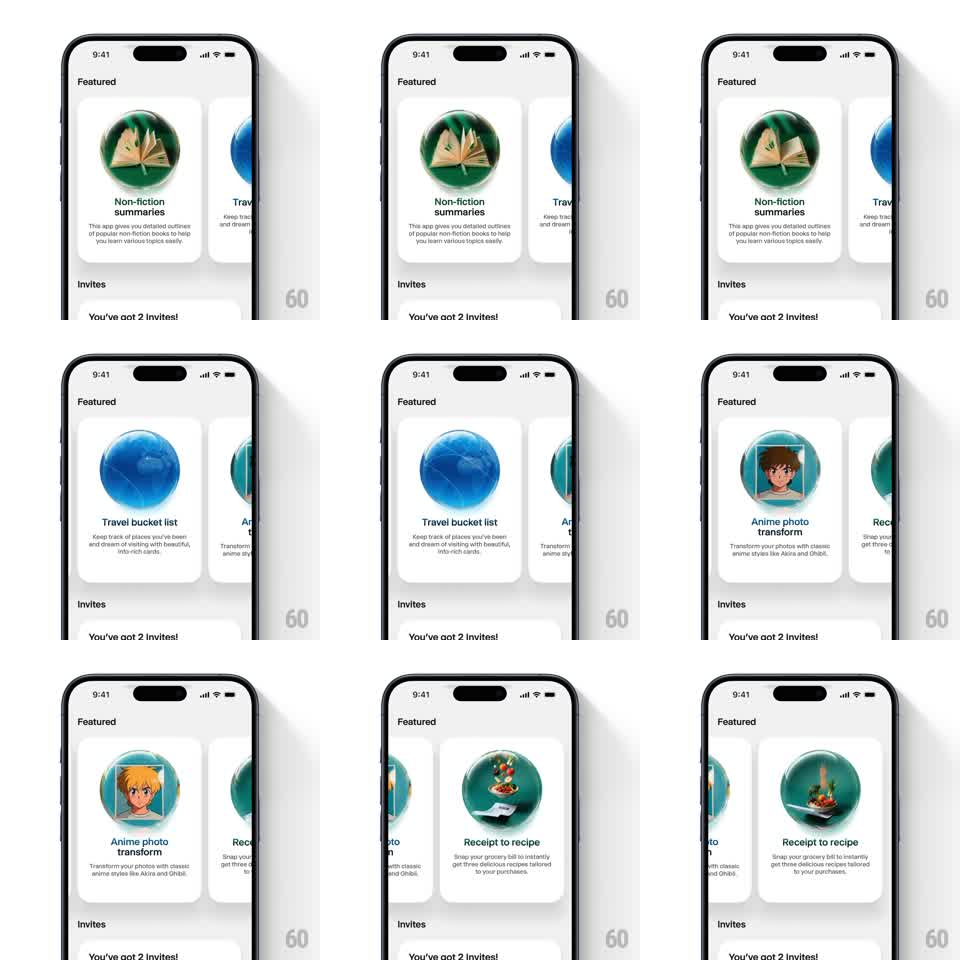

Media
Frame-by-frame

Rebuild this interaction 1:1: Wabi's featured carousel - a horizontal swipe of white app cards whose 3D glass-morphic circular icons (green book, blue globe, teal anime frame) rotate on their vertical axis in response to scroll position.

Rebuild this interaction 1:1: Wabi's featured carousel - a horizontal swipe of white app cards whose 3D glass-morphic circular icons (green book, blue globe, teal anime frame) rotate on their vertical axis in response to scroll position. ## Integration Integration: stack-agnostic spec - springs given as stiffness/damping, timed motions as duration + curve; map every value to your framework and animation library of choice. ## Scene Light "Featured" screen: a horizontal card carousel - each white card holds a large glassy sphere icon (Non-fiction summaries: open book in green glass; Travel bucket list: earth in blue glass; Anime photo transform: portrait in teal glass; Receipt to recipe: skillet), a bold title, and two-line description. Below: an "Invites" section with a "You've got 2 Invites!" row. ## Motion spec Pattern: scroll-linked 3D icon rotation, gesture-driven. - Scroll: cards move 1:1 with the drag, snapping to center on release (spring ~340/24); the adjacent card peeks ~15% at the edge. - Rotate: each icon spins around its vertical axis tied to its card's offset from center (0deg at center, +-70deg at the screen edge), with specular highlights tracking the rotation. - Settle: when a card locks center, its icon eases to face forward with a small overshoot (spring ~300/18). - Depth: off-center cards scale to 0.94 and dim 10%. ## Calibration - Icon rotation is position-driven, not time-driven - pause the scroll and the icon holds its angle. - The glass refraction stays glossy at every angle. ## Reduced motion Icons stay front-facing; cards snap without scale change. ## Don't miss - The icon content is visible through the glass - it rotates as one 3D unit, not a flat spin. - Carousel and icons share one scroll driver; no independent autoplay.